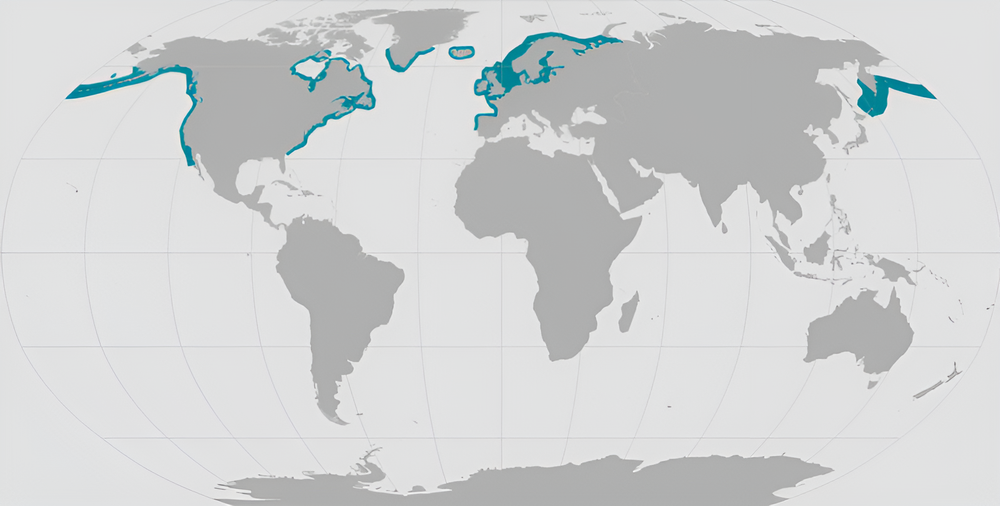

NOAA Fisheries have identified 18 stocks of harbor seals. Twelve of those stocks are located in alaska,
California, Oregon-Washington coastal, Thre stocks are located withing Washington inland waters, and
eastern USA/Canada stock. Each stock has different population trends over the past 30 years.
Along the west Coast, stocks either show some fluctuation with no clear trend, or are growing.
The stock population in New England is stable. Individual breeding and moltime colonies can number
in thousands in some of these areas.
Harbor Seals are a part of the true seal family. All true seals have short forelimbs, or flippers. They also lack external ear flaps and instead have a small hole
on both sides of their head. Harbor Seals can weight up to 285 pounds with the female seals weighing a little bit more than the male seals. Unique identifiers can be found
on all seals. These identifiers include short, dog-like snouts, and the color of their fur. Each seals fur colors varys, but always follows two basic patterns:
light tan, silver, or blue-gray with dark speckling or spots, and a dark background with light rings. Harbor seals molt (shed) in mid to late summer for around 1-2 months spending
more time out of the water.
Where They Live
Harbor Seals live in temperate costal areas along the northern coasts of North America,
Europe, and Asia. Harbor seals are found from the canadian artic to the Mid-Atlantic.
Harbor seals can be found along the West coast of North America, from Baja California,
Mexico to the bearing sea. Harbor seals are considered to be non-migratory and stypically stay withing 15-31 miles of their natal area.

Behavior-and-Diet
Harbor seals like to rest on rocks, reefs, beaches and drifting glacial ice when they are not
Traveling and/or foraging at sea. harbor seals rest so they can regulate their body temperature,
molt, interact with other seals, give birth, and nurse their pups when they are born. Harbor
Seals like to haut out in groups to help spend less time watching for predators.
Harbor Seal pups can swim at birth, they can dive for up to 2 minutes when they are only 2-3 days old,
and after the first month, they take journeys over 100 miles from the natal area.
The Harbor Seal's diet consists of mainly fish, shellfish, and crustances. The harbor Seal
can sleep underwater for about 30 minutes before needing to come up for air.
Lifespan and Reproductivity
Harbor seals reach sexual maturity between 3 and 7 years old. females usually give birth during the spring and summer, the pupping season varies by location. Female Seals
are pregnant for about 10 months, though a viable embryo exists for about 2 months prior to implantation and growth. Pups weigh about 24 pounds at birth and are ready to swim within minutes
of being born. The Pups nurse for 4 to 6 weeks on milk that is 50 percent fat. seal pups haul(Seal pups come out of the water and onto land/ice to rest and control their body temperature.)
out to rest and regulate their body temperature. Adult females forage during lactation.
The lifespan of a harbor seal on average is about 25 to 30 years of age. They can span up to 5 to 6 feet in length.
Threats
Fishing gear is a big threat to Harbor seals. Harbor seals can become entangled in fishing geat, either swimming
off with the gear attached or becoming anchored. Once they are entangled, seals may drown if they cannot
reach the surface to breathe, or they may drag attached gear for long distances as they swim, resuling in fatigue,
compromised feeding ability, or serious injury, all of which may lead to a reduction in reproductive success and even death.
Other types of marine depris, such as packing bands, can be found on shore, leading to entabglement around the head and neck,
which may cause serious injury and death from wounds.
Communication
Harbor Seals perform percussive behaviour like flipper slapping, on and and in water for communication. Rythmic percussive signaalling occurs in agonistic
interactions and display the seals behavior. Interactive percussive signalling consists of fast, regular slap sequences. All juvenile and adult animals perform
percussive signalling with fire fire flippers in agonistic conditions, both on land and in water. Slapping on water is something performed only by adult males,
it showed slower, more organized tempo, rater than being a random sequence of faster tempo slaps. This slapping behavior forms a rythmic prduction that may reflect
adaptive functions such as regulating internal states, rather than expressing individual traits.
Predators
The most common predator of the haror sela is the killer whale. Other predators may include sharks, sea lions, and even land predators
such as wolves, bears, coyotes, and bald eagles that may targe a newborn pup.